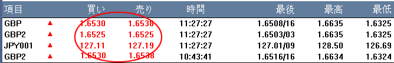
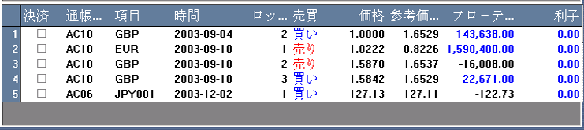
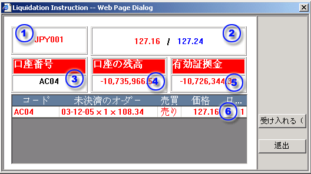

スポットの注文
取引プラットフォームは常時リアルタイムの為替レートが表示され取引出来るように考案され設計されています。売値と買値は次のように取引パネルに表示され、お客様は常時売値と買値をクリック出来、いつでも取引を実行出来ます。現実取引をいつでも実行することで、相互間相場をお客様は感じ、市場の取引相場が現実であることを実際に体感するはずです。現実の建値取引、即ち、通貨ペアを提供することで投資家に対し通常取引に比較し格段に敏速な取引を提供しております。
直物注文は以下のいずれかの方法を選択することが出来ます。
取引パネルで表示された現実価格を閲覧することや注文操作が出来る機能を備えています。 お客様は随時、現時点での売値・買値をクリック出来ます。取引パネルは注文操作や実際の相場情報を提供しております。
|  |
| 1 | 注文用の取引専用コード |
|
|
| 2 | 注文用取引口座 | ||
| 3 | 取引契約に基づく預託金をエンター | ||
| 4 | 市場変動相場のリアルタイム取引相場 | ||
| 5 | 口座における買付契約リスト | ||
| 6 | 口座における売付契約リスト | ||
| 7 | 決済時に契約番号を入力すること | ||
| 8 | 注文時の取引専用ボタン | ||
| 9 | 決済目的に対しては全ての取引残高をクリアにすること。 | ||
| 10 | 取引専用画面を終了する |
オープン注文リストを経由する注文は決済目的のものです。お客様がある注文について決済したい場合は、該当する□をチェックし、注文についてマウスでクリックして下さい。
|  |
お客様は単一値で決済する多数の同一注文をチェックして下さい。注文をクリックした場合、決済指示ダイアログが表示されます。
| 1 | 注文用取引専用コード |  |
| 2 | リアルタイム取引相場 | |
| 3 | 選定注文取引口座 | |
| 4 | 選定注文取引口座残高 | |
| 5 | 選定注文口座の証拠金銭残高 | |
| 6 | 決済契約枚数―お客様の希望により調整可能 |
お客様が希望する取引相場で、(SUBMITボタン)又(F8)キーを押すと注文を実行出来ます。 SUBMITボタンをクリック又は売り買いボタンをクリックすると直ぐに認識可能画面が表示されます。